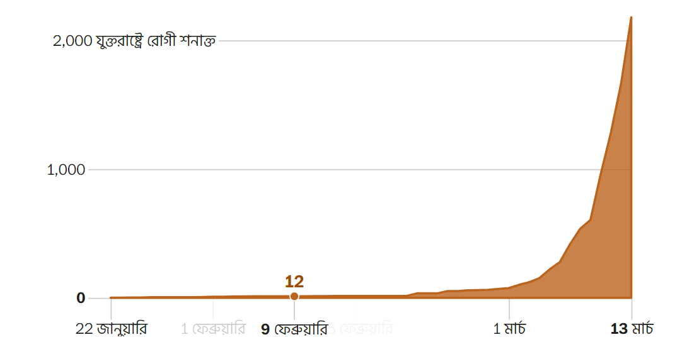
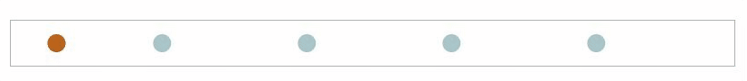
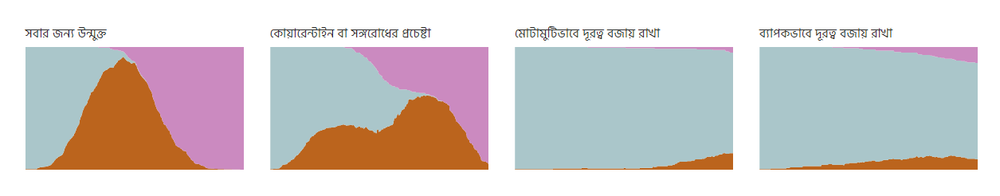

করোনাভাইরাসের মতো প্রাদুর্ভাব কেন এত দ্রুত ছড়ায়, এবং কীভাবে এটি “নিয়ন্ত্রণে রাখা যাবে”
অনুগ্রহ করে জেনে রাখুন
দ্য ওয়াশিংটন পোস্ট বিনামূল্যে এই সংবাদটি প্রকাশ করছে যাতে বিশ্বের সকল প্রান্তের মানুষ করোনাভাইরাস সম্পর্কে এসব গুরুত্বপূর্ণ তথ্য জানতে পারে।
কোভিড-১৯ হচ্ছে করোনাভাইরাসের নতুন প্রজাতি দ্বারা সৃষ্ট রোগ। যুক্তরাষ্ট্রে প্রথমবার কোভিড-১৯ শনাক্ত হওয়ার পর থেকে এক এক করে আরও মানুষ সংক্রমিত হওয়ার খবর আসতে থাকে। মাত্র দুই মাস সময়ের ব্যবধানে রোগটি যেন প্রতিনিয়ত বেশ দ্রুত ছড়িয়ে যাচ্ছে।
এটাই করোনাভাইরাসের দ্রুত বিস্তার দেখানোর রেখা যে বিষয়ে বিশেষজ্ঞরা উদ্বেগ প্রকাশ করেছিলেন। প্রতি তিন দিনে যদি আক্রান্ত মানুষের সংখ্যা দ্বিগুণ হয় তাহলে মে মাস নাগাদ কেবল যুক্তরাষ্ট্রেই প্রায় ১০ কোটি মানুষ এই ভাইরাস দ্বারা সংক্রমিত হতে পারে।
এটা কোনো ভবিষ্যদ্বাণী নয় বরং এটা শুধুমাত্র একটি গাণিতিক হিসাব। জনস্বাস্থ্য বিশেষজ্ঞরা বলেছেন যে এই রোগের বিস্তার কমানো যেতে পারে। এর জন্য সবাইকে জনসমাগম এড়িয়ে চলতে হবে এবং ঘর থেকে প্রয়োজন ছাড়া বের হওয়া যাবে না। আর এভাবেই মানুষকে “সামাজিকভাবে একে অন্যের থেকে দূরত্ব” বজায় রাখতে হবে।
তবে এর বিস্তার কমানোর জন্য পদক্ষেপ গ্রহণ না করলে মাসের পর মাস কোভিড-১৯ ব্যাপকভাবে ছড়িয়ে যেতে থাকবে। এর কারণ বোঝার জন্য চলুন একটি বানানো রোগ তৈরি করে নিই এবং এটি কিভাবে মানুষের মধ্যে ছড়িয়ে যায় তা দেখি।
আমরা আমাদের বানানো রোগকে সিমুলাইটিস বলবো। এটি কোভিড-১৯ এর চেয়েও সহজে ছড়াতে পারে। একজন স্বাস্থ্যবান মানুষ এই রোগে আক্রান্ত কোনো অসুস্থ মানুষের সংস্পর্শে এলে সুস্থ্য মানুষটিও এতে আক্রান্ত হয়ে যান।
পাঁচজন মানুষ আছে এমন একটি স্থানে সিমুলাইটিস রোগটি ছড়িয়ে যেতে খুব বেশি সময় নেয়নি।
বাস্তব জীবনে মানুষজন সিমুলাইটিস থেকে আরোগ্য লাভ করবেন। আরোগ্য লাভ করা একজন মানুষ থেকে অন্য কোনো মানুষে সিমুলাইটিস ছড়াবে না। এমনকি তিনি আরেকজন অসুস্থ মানুষের সংস্পর্শে গেলেও পুনরায় আক্রান্ত হবেন না।
আমাদের সিমুলাইটিস রোগটি ২০০ জনসংখ্যার একটি টাউনে ছড়িয়ে গেলে কী হবে চলুন দেখে নেওয়া যাক। আমরা একেকজন মানুষকে একেক জায়গায় ছড়িয়ে ছিটিয়ে আমাদের সিমুলেশন শুরু করবো। তাদের চলাফেরাও যথেচ্ছভাবে হতে থাকবে এবং আমরা প্রথমে একজন মানুষকে অসুস্থ রাখবো।

আমাদের সিমুলেশন করা টাউনের লোকসংখ্যা অনেক কম, তা আলাস্কার হুইটিয়ার অঞ্চলের প্রায় সমান। ফলে সিমুলাইটিস খুব সহজেই সমগ্র অঞ্চলে ছড়িয়ে পড়েছে। যুক্তরাষ্ট্রের মতো একটি দেশে, যেখানে জনসংখ্যা ৩৩ কোটি, সেখানে রোগ কমার আগে বরং সংক্রমণের হার অনেকদিন বেড়েই যেতে থাকবে।
আসল কোভিড-১৯ এর কথা বললে, আমরা চাইনা এটি যুক্তরাষ্ট্রের বেশি সংখ্যক মানুষকে আক্রান্ত করে ফেলুক। আমরা চাইবো যেন ভাইরাসটির সংক্রমণের হার দ্রুতই কমানো যায়। সিমুলাইটিসের সংক্রমণ কমানোর জন্য চলুন একটি জোর করে কোয়ারেন্টাইনের কথা চিন্তা করি। কোভিড-১৯ এর গ্রাউন্ড জিরো নামে পরিচিত হুবেই অঞ্চলে চাইনিজ সরকার এমনই একটি জোরপূর্বক কোয়ারেন্টাইন আরোপ করেছিল।

ওহো! স্বাস্থ্যসেবা বিশেষজ্ঞরা মনে করেন যে সব অসুস্থ মানুষদের শনাক্ত করে সুস্থ মানুষদের কাছ থেকে সম্পূর্ণভাবে আলাদা করে রাখা সম্ভব নয়।
জোরপূর্বক কোয়ারেন্টাইনের অবাস্তবতা প্রসঙ্গে বাল্টিমোর শহরের সাবেক হেলথ কমিশনার লিয়ানা ওয়েন বিগত জানুয়ারি মাসে দ্য ওয়াশিংটন পোস্ট এর সাথে কথা বলেছেন। ওয়েন বলেছেন, “এই শহর হচ্ছে অনেক মানুষের কর্মস্থল। কিন্তু তাদের অনেকেই আশেপাশের কাউন্টিগুলোতে বসবাস করে। আবার এখান থেকেও অনেক মানুষ বাইরে কাজ করতে যায়।” তিনি এও বলেছেন, “মানুষজন কি তাদের পরিবার থেকে আলাদা থাকবে? প্রতিটি রাস্তা কি আদৌ বন্ধ করে দেওয়া সম্ভব? মানুষজনের বাসায় খাবার কিভাবে পৌঁছাবে?”
জর্জটাউন ইউনিভার্সিটির বৈশ্বিক স্বাস্থ্য আইন বিভাগের প্রফেসর লরেন্স ও. গস্টিন এই প্রসঙ্গে বলেছেন: “সত্যি কথা বলতে এই ধরণের লকডাউন সচরাচর দেখা যায় না এবং এগুলো কখনোই সম্ভব নয়।”
আশার কথা হলো যে, রোগের প্রাদুর্ভাব কমানোর জন্য আরও কিছু পন্থা রয়েছে। সর্বোপরি, স্বাস্থ্যসেবা- পেশাদা্ররা মানুষকে জনসমাগম এড়িয়ে চলতে, যত বেশি সম্ভব ঘরে সময় কাটাতে এবং একে অন্যের থেকে দূরত্ব বজার রাখার পরামর্শ দিয়েছেন। মানুষজন যদি তাদের ঘর থেকে কম বের হয় এবং একে অন্যের সাথে মেলামেশা যথেষ্ট কমিয়ে দেয় তাহলে ভাইরাস সংক্রমনের সুযোগ অনেকটাই কমে আসবে।
কিন্তু এর পরও কিছু মানুষ বাইরে বের হবেই। হয়তো তারা কাজের জন্য কিংবা অন্যান্য প্রয়োজনে চাইলেও নিজেদের ঘরে থাকতে পারবেন না অথবা অনেকে হয়তো এমনিতেই বিপদ সংকেতের তোয়াক্কাই করবেন না। তারা কেবলি নিজেরাই রোগের ঝুঁকিতে থাকবে না বরং তারা অন্যান্য মানুষের মধ্যে সিমুলাইটিস ছড়িয়ে দেওয়ার বাহক হিসেবেও কাজ করবে।
জনসংখ্যার এক চতুর্থাংশ বাইরে ঘোরাফেরা শুরু করলে, এবং বাকি মানুষ স্বাস্থ্যসেবা বিশেষজ্ঞদের “সামাজিকভাবে একে অন্যের থেকে দূরত্ব” বজায় রাখার কৌশল অবলম্বন করলে, কী হবে চলুন তা দেখে নেওয়া যাক।

যত বেশি সম্ভব সামাজিকভাবে একে অন্যের থেকে দূরত্ব বজায় রাখা যাবে, তত বেশি মানুষ সুস্থ থাকবে। পাশাপাশি, জনসমাগমের স্থানগুলো থেকে মানুষের আকর্ষণ সরিয়ে নিলে তাদেরকে সেখানে যাওয়া থেকে বিরত রাখা যাবে।
দ্য থমসন জেফারসন ইউনিভার্সিটি কলেজ অব পাবলিক হেলথ-এর জনসংখ্যা স্বাস্থ্য গবেষক এবং সহকারী অধ্যাপক ড্রিউ হ্যারিস বলেছেন, “জনসমাগমের স্থানগুলো বন্ধ করে দিয়ে আমরা মানুষকে নিয়ন্ত্রণে রাখতে পারবো। ইতালিতে তারা তাদের সকল রেস্টুরেন্ট বন্ধ করে রেখেছে। চীনও সব প্রতিষ্ঠান বন্ধ রাখছে এবং সেই ধারাবাহিকতায় আমরাও সব কিছু বন্ধ করে দিচ্ছি”। তিনি এও বলেছেন, “জনসমাগমের সুযোগ কমানোর মাধ্যমে আমরা মানুষের মধ্যে সামাজিকভাবে একে অন্যের থেকে দূরত্ব বজায় রাখার বিষয়টির বাস্তবায়ন করতে পারবো।”
আরও বেশি সামাজিকভাবে একে অন্যের থেকে দূরত্ব বজার রাখার বিষয়টি বোঝার জন্য চলুন দেখি যে প্রতি আট জনে একজন মানুষ বাইরে ঘোরাফেরা করলে কী হয়।

আপনি ইতোমধ্যে চারটি সিমুলেশন দেখলেন- সবার জন্য উন্মুক্ত‚ কোয়ারেন্টাইন বা সঙ্গরোধের প্রচেষ্টা‚ মোটামুটিভাবে দূরত্ব বজায় রাখা এবং ব্যাপকভাবে দূরত্ব বজায় রাখা। তার মানে প্রতিটির ফলাফল এই প্রবন্ধ পড়ার মতোই ইউনিক। আপনি যদি স্করোল করে উপরের সিমুলেশনগুলো আবার দেখেন, অথবা এই পেজটি পরবর্তী কোনো এক সময় আবার পরিদর্শন করতে আসেন তবে আপনি ভিন্ন ফলাফল দেখতে পাবেন।
ফলাফল ভিন্ন হলেও, সবার মোটামুটিভাবে দূরত্ব বজায় রাখা সম্ভব হলে তা কোয়ারেন্টাইনের নামমাত্র প্রচেষ্টার চেয়ে ভালো ফলাফল বয়ে আনবে। তবে সবাই একে অন্যের থেকে ব্যাপকভাবে দূরত্ব বজায় রাখতে পারলে বিষয়টি সবার জন্য বেশি কল্যাণকর হবে। ফলাফলগুলোর তুলনা নিচে দেখনো হলো।
সিমুলাইটিস মানেই কোভিড-১৯ রোগ নয়। এসব সিমুলেশনের মাধ্যমে বরং বাস্তব জীবনের জটিল চিত্র খুব সহজবোধ্য উপায়ে উপস্থাপন করা হয়েছে। আপনার স্ক্রিনে দেখতে পাচ্ছেন যে লাফাতে থাকা কিছু গোলকের নেটওয়ার্কের মাধ্যমে সিমুলাইটিস বিস্তৃত হয়ে যাচ্ছে। ঠিক এভাবেই‚ এক মানুষ থেকে আরেক মানুষে‚ এক দেশ থেকে অন্য দেশে‚ শহর থেকে শহরে‚ আমাদের কর্মস্থলে এবং পরিবারের সদস্যদের মধ্যে কোভিড-১৯ ছড়িয়ে পড়ছে।
যদিও এসব সিমুলেশন বাস্তব জীবনের হুবহু চিত্র নয়, তবুও আশঙ্কার বিষয় এই যে: সিমুলাইটিস মানুষের মৃত্যুর কারণ না হলেও কোভিড-১৯ মানুষের জীবন কেড়ে নেওয়ার ক্ষমতা রাখে। এই রোগের ক্ষেত্রে মৃত্যুর হার কেমন তা সঠিকভাবে জানা না গেলেও একটি বিষয় স্পষ্ট যে সমাজের বয়স্ক মানুষজন কোভিড-১৯ কারণে বেশি মারা যাওয়ার ঝুঁকিতে রয়েছেন।
এই সংবাদটির প্রিভিউ দেখে হ্যারিস বলেছেন যে “আপনি যদি আরও বাস্তবিক হতে চান” তাহলে “চিন্তা করুন যে কিছু কিছু বিন্দু সময়ের সাথে সাথে অদৃশ্য হয়ে যাচ্ছে।”
মূল পোষ্টটি পড়তে এখানে ক্লিক করুন।